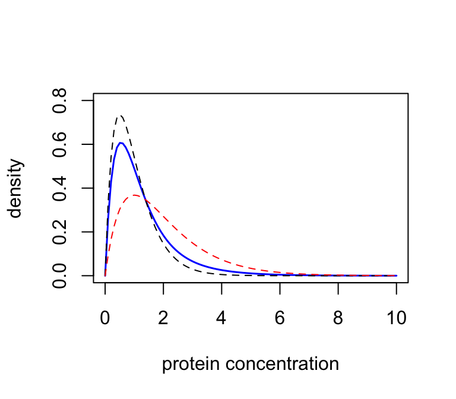
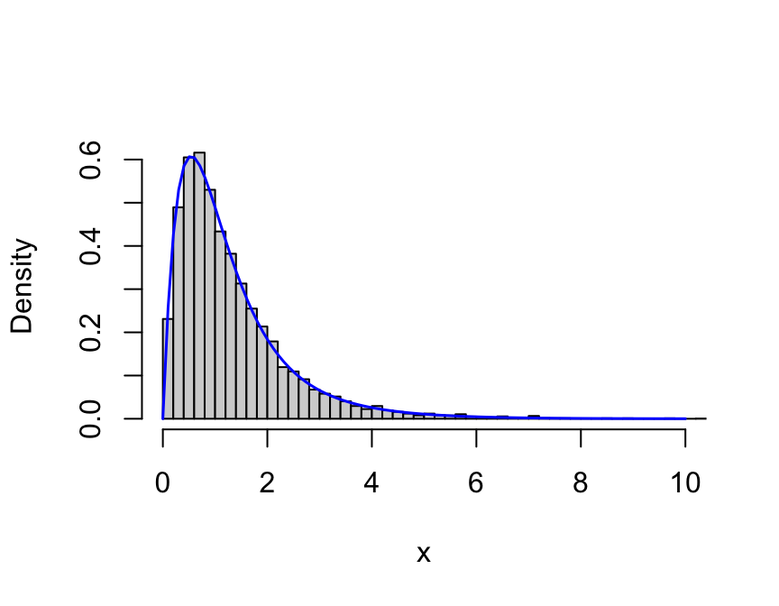

Last updated: 2026-01-12
Checks: 7 0
Knit directory: fiveMinuteStats/analysis/
This reproducible R Markdown analysis was created with workflowr (version 1.7.1). The Checks tab describes the reproducibility checks that were applied when the results were created. The Past versions tab lists the development history.
Great! Since the R Markdown file has been committed to the Git repository, you know the exact version of the code that produced these results.
Great job! The global environment was empty. Objects defined in the global environment can affect the analysis in your R Markdown file in unknown ways. For reproduciblity it’s best to always run the code in an empty environment.
The command set.seed(12345) was run prior to running the
code in the R Markdown file. Setting a seed ensures that any results
that rely on randomness, e.g. subsampling or permutations, are
reproducible.
Great job! Recording the operating system, R version, and package versions is critical for reproducibility.
Nice! There were no cached chunks for this analysis, so you can be confident that you successfully produced the results during this run.
Great job! Using relative paths to the files within your workflowr project makes it easier to run your code on other machines.
Great! You are using Git for version control. Tracking code development and connecting the code version to the results is critical for reproducibility.
The results in this page were generated with repository version 2891275. See the Past versions tab to see a history of the changes made to the R Markdown and HTML files.
Note that you need to be careful to ensure that all relevant files for
the analysis have been committed to Git prior to generating the results
(you can use wflow_publish or
wflow_git_commit). workflowr only checks the R Markdown
file, but you know if there are other scripts or data files that it
depends on. Below is the status of the Git repository when the results
were generated:
Unstaged changes:
Modified: analysis/em_algorithm_01.Rmd
Note that any generated files, e.g. HTML, png, CSS, etc., are not included in this status report because it is ok for generated content to have uncommitted changes.
These are the previous versions of the repository in which changes were
made to the R Markdown (analysis/mixture_models_01.Rmd) and
HTML (docs/mixture_models_01.html) files. If you’ve
configured a remote Git repository (see ?wflow_git_remote),
click on the hyperlinks in the table below to view the files as they
were in that past version.
| File | Version | Author | Date | Message |
|---|---|---|---|---|
| html | 2891275 | Peter Carbonetto | 2026-01-12 | Ran wflow_publish("analysis/mixture_models_01.Rmd"). |
| Rmd | 620c8c6 | Peter Carbonetto | 2026-01-12 | A few more minor updates to the mixture models vignette. |
| Rmd | 610d9e7 | Peter Carbonetto | 2026-01-12 | Updates to mixture_models_01 vignette. |
| html | a221240 | Peter Carbonetto | 2026-01-09 | Push a bunch of updates to the webpages. |
| Rmd | 4e44239 | Peter Carbonetto | 2026-01-09 | Added pdf versions of mixture_models_01 and em_algorithm_01 vignettes. |
| html | 803554a | Matthew Stephens | 2021-04-20 | Build site. |
| Rmd | cc566d3 | Matthew Stephens | 2021-04-20 | workflowr::wflow_publish("analysis/mixture_models_01.Rmd") |
| html | 4ced11a | Matthew Stephens | 2021-01-26 | Build site. |
| Rmd | 4b1238c | Matthew Stephens | 2021-01-26 | workflowr::wflow_publish("mixture_models_01.Rmd") |
| html | f4bada4 | Matthew Stephens | 2021-01-25 | Build site. |
| Rmd | be59a00 | Matthew Stephens | 2021-01-25 | workflowr::wflow_publish("mixture_models_01.Rmd") |
See here for a PDF version of this vignette.
You should be familiar with basic probability, including the law of total probability, the notion of distibution and density, and with standard distributions (particularly the Gamma distribution).
This vignette introduces the idea of a mixture model. These models are widely used in statistics to model data where observations come from a “mixture” of two or more different distributions. This vignette introduces the basic idea of a mixture, its density/mass function, and terminology such as mixture proportions, mixture components and latent variable representation.
We begin this vignette with an example. A medical screening test for a disease involves measuring the concentration (\(X\)) of a protein in the blood. In normal individuals, \(X\) has a Gamma distribution with mean 1 and shape 2 (so the scale parameter is 0.5, as scale = mean/shape). In diseased individuals, the protein becomes elevated, and \(X\) has a Gamma distribution with mean 2 and shape 2 (so scale = 1).
Suppose that in a particular population, 70% of individuals are normal and 30% are diseased. What will be the overall distribution of the protein levels in this population? How could you simulate from this distribution?
Let \(X\) denote the protein concentration of a randomly chosen individual from the population. Let \(Z\) denote whether the randomly-chosen individual is normal (\(Z=1\)) or diseased (\(Z=2\)). Here we assume that \(Z\) is not observed; it has been introduced to help with notation and derivations.
By the law of total probability, we can write the density of \(X\) as \[ p(x) = \Pr(Z = 1) \, p(x \mid Z = 1) + \Pr(Z=2) \, p(x \mid Z = 2). \] In words, this represents \[ p(x) = \Pr(\text{normal}) \, p(x \mid \text{normal}) + \Pr(\text{diseased}) \, p(x \mid \text{diseased}). \]
From the information given, we know that \(\Pr(\text{normal})=0.7\) and \(\Pr(\text{diseased}) = 0.3\). We also know \(p(x \mid \text{normal})\) and \(p(x \mid \text{diseased})\) are each given by the density of a Gamma distribution. So we can write \[ \textstyle p(x) = 0.7 \, \mathrm{Gamma}(x; 0.5, 2) + 0.3 \, \mathrm{Gamma}(x; 1, 2), \] where \(\mathrm{Gamma}(x; a, b)\) denotes the density of a Gamma distribution with scale \(a\) and shape \(b\).
This distribution is an example of a “mixture distribution” (in particular, it is a “mixture of two Gamma distributions”). Here we plot the density of this mixture distribution (solid blue), as well as the densities of the individual distributions that were combined to make the mixture (the dashed black line for “normal”, the dashed red line for “diseased”). In mixture terminology, these individual distributions are called the “component distributions”.
x <- seq(0,10,length.out = 100)
plot(x,
0.7 * dgamma(x,scale = 0.5,shape = 2) +
0.3 * dgamma(x,scale = 1,shape = 2),
col = "blue",type = "l",lwd = 1.5,
xlab = "protein concentration",
ylab = "density",ylim = c(0,0.8))
lines(x,dgamma(x,scale = 0.5,shape = 2),type = "l",col = "black",
lwd = 1,lty = "dashed")
lines(x,dgamma(x,scale = 1,shape = 2),type = "l",col = "red",lwd = 1,
lty = "dashed")
| Version | Author | Date |
|---|---|---|
| 2891275 | Peter Carbonetto | 2026-01-12 |
One nice thing about mixture models is that they are easy to simulate from. The trick is to simulate both \(X, Z\) from the joint distribution \(p(X, Z)\), then simply ignore \(Z\). This ensures that \(X\) comes from its marginal distribution \(p(X)\).
Simulating from \(p(X, Z)\) can be achieved by a two-stage process: (1) simulate \(Z \sim p(Z)\), (2) simulate \(X \mid Z \sim p(X \mid Z)\), both of which are easy. The following code illustrates this idea by simulating 10,000 samples from the mixture, then plotting a histogram of the samples. As you can see, the histogram closely matches the mixture density.
n <- 10000
x <- rep(0,n)
shape <- c(2,2)
scale <- c(0.5,1)
for (i in 1:n) {
if (runif(1) < 0.7)
z <- 1
else
z <- 2
x[i] <- rgamma(1,scale = scale[z],shape = shape[z])
}
hist(x,breaks = 64,xlim = c(0,10),probability = TRUE,main = "")
xvec <- seq(0,10,length.out = 100)
lines(xvec,
0.7 * dgamma(xvec,scale = 0.5,shape = 2) +
0.3 * dgamma(xvec,scale = 1,shape = 2),
lwd = 1.5,col = "blue")
| Version | Author | Date |
|---|---|---|
| 2891275 | Peter Carbonetto | 2026-01-12 |
Note that we set probability = TRUE when creating the
histogram in the above code so that it is scaled like a density (i.e.,
area = 1). This makes it easy to compare with the theoretical
density.
The following exercises are designed to help you generalize the ideas in example above to other settings.
In the above example, there was people sampled from a population that is 50% male and 50% female, where the males have heights that are normally distributed with mean 70 in and standard deviation 3 in, and the females have heights that are normally distributed with mean 64.5 in and standard deviation 2.5 in. Write the density of the mixture model. Identify the mixture proportions and the mixture component densities. Plot the mixture density and the component densities in a plot similar to the one in the example above.
Similarly, there is nothing that limits us to mixing just two distributions — you can mix any number of distributions together. This exercise illustrates this idea.
Suppose that in the protein concentration example above, the population consists of males and females, who have different rates of disease, and also different protein distributions. So now there are four groups: “male, diseased”; “male, normal”; “female, diseased”; and “female, normal”. Making whatever assumptions you want to make about the component distributions (say what they are), and about the relative frequency of each group in the population (again, say what they are), write out a mixture distribution that could represent this situation. Plot the components of your assumed mixture and the mixture density.
The above example involves a mixture of two continuous distributions (Gamma distributions) and so the mixture distribution is also continuous. However, mixtures of discrete distributions work in the same way: you just use probability mass functions instead of probability density functions.
For example, let \(X\) denote the number of molecules of a particular gene in a cell randomly drawn from some population of cells. Assume that the population contains three cell types, in proportions 0.2, 0.4, 0.4. Further suppose that in each cell type the number of molecules follows a Poisson distribution with mean parameter \(\lambda = 2, 5, 10\), respectively. The distribution of \(X\) is therefore a mixture of three Poisson distributions. Can you write down its probability mass function?
Putting the above ideas together, we can write the density for a mixture of \(K\) continuous distributions that have densities \(f_1, \dots, f_K\) in proportions \(\pi_1, \dots, \pi_K\). Such a mixture would have density \[ p(x) = \sum_{k=1}^K \pi_k f_k(x). \] Exactly the same equation holds for a mixture of \(K\) discrete distibutions, but with \(p(x)\) and \(f_k\) representing probability mass functions instead of densities.
This is called a mixture distribution (or mixture model, or just mixture) with \(K\) components. (Sometimes it is called a finite mixture because one can also further generalize the ideas to an uncountably infinite number of components!)
The \(f_1, \dots, f_K\) are called the component densities (or component distributions). So \(f_1\) is the density of component 1, and \(f_k\) is the density of component \(k\).
The \(\pi_1, \dots, \pi_K\) are called the mixture proportions. Of course, we must have \(\pi_k \geq 0\) and \(\sum_{k=1}^K \pi_k =1\).
The unobserved random variable \(Z\) is sometimes referred to as the “component of origin” or the “component that gave rise to” the observation \(X\). If we have \(n\) observations \(X_1,\dots,X_n\) from a mixture model it is common to use \(Z_i\) to denote the component that gave rise to \(X_i\).
Introducing unobserved variables to help with computations or derivations is a common trick that is used beyond mixture models. This trick is sometimes called data augmentation. The unobserved random variables are sometimes called “hidden variables” or “latent variables”. Representing the mixture model \[ p(x) = \sum_{k=1}^K \pi_k f_k(x) \] by the two-stage process \[ \begin{aligned} p(Z=k) &= \pi_k \\ p(x \mid Z = k) &= f_k(x), \quad k = 1, \ldots, K \end{aligned} \] is called the latent variable representation of the mixture model.
sessionInfo()
# R version 4.3.3 (2024-02-29)
# Platform: aarch64-apple-darwin20 (64-bit)
# Running under: macOS 15.7.1
#
# Matrix products: default
# BLAS: /Library/Frameworks/R.framework/Versions/4.3-arm64/Resources/lib/libRblas.0.dylib
# LAPACK: /Library/Frameworks/R.framework/Versions/4.3-arm64/Resources/lib/libRlapack.dylib; LAPACK version 3.11.0
#
# locale:
# [1] en_US.UTF-8/en_US.UTF-8/en_US.UTF-8/C/en_US.UTF-8/en_US.UTF-8
#
# time zone: America/Chicago
# tzcode source: internal
#
# attached base packages:
# [1] stats graphics grDevices utils datasets methods base
#
# loaded via a namespace (and not attached):
# [1] vctrs_0.6.5 cli_3.6.5 knitr_1.50 rlang_1.1.6
# [5] xfun_0.52 stringi_1.8.7 promises_1.3.3 jsonlite_2.0.0
# [9] workflowr_1.7.1 glue_1.8.0 rprojroot_2.0.4 git2r_0.33.0
# [13] htmltools_0.5.8.1 httpuv_1.6.14 sass_0.4.10 rmarkdown_2.29
# [17] evaluate_1.0.4 jquerylib_0.1.4 tibble_3.3.0 fastmap_1.2.0
# [21] yaml_2.3.10 lifecycle_1.0.4 whisker_0.4.1 stringr_1.5.1
# [25] compiler_4.3.3 fs_1.6.6 Rcpp_1.1.0 pkgconfig_2.0.3
# [29] later_1.4.2 digest_0.6.37 R6_2.6.1 pillar_1.11.0
# [33] magrittr_2.0.3 bslib_0.9.0 tools_4.3.3 cachem_1.1.0